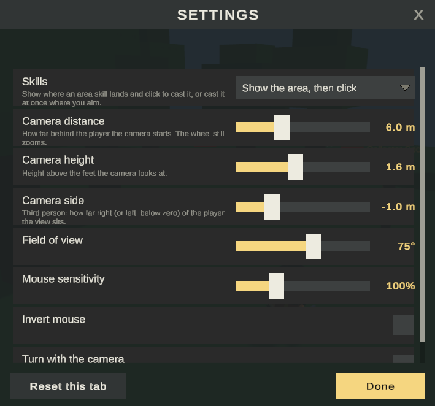

Player settings
Players change graphics, sound, interface and controls in the Settings window, and leave the world, change character or quit from the game menu. This page covers both, every option with its default, where settings are saved, how sounds and music follow the volume channels, and how to add options of your own.
Game menu
Press Esc (when no window is open) or click the gear in the icon bar at the top right. The menu has:
| Button | What it does |
|---|---|
| Resume | Closes the menu |
| Settings | Opens the Settings window |
| Change character | Leaves the world and goes back to character selection. In single player it reads Save and leave |
| Sign out | Goes back to the login screen. MMO only |
| Quit game | Closes the game |
Leaving, signing out and quitting ask for confirmation ("Leave the world and go back to your characters?", "Sign out and go back to the login screen?", "Quit the game?"). When the character is in combat, the question adds "You are in combat."
Esc closes an open window or popup first, and opens the menu only when nothing was open. It doesn't open the menu while you type in the chat, answer a confirmation or have Settings open. See HUD and windows.
The game menu also shows a frame counter in the top left while Show FPS is on.
The Settings window

Open it from the game menu, or with the Settings button on the title screen. It has a tab per page: Graphics, Audio, Interface, and Controls when the control mode adds options. Changes apply at once. Each tab has a Reset button that asks "Put the page settings back as they came?".
Where settings are saved
Settings belong to the computer, not the account: nothing goes to the server. They are saved to PlayerPrefs under the key KitARPG.Options (as JSON) when the window closes or the game quits. Controls options use their own PlayerPrefs keys.
Graphics
| Option | Choices | Default |
|---|---|---|
| Display | Full screen, exclusive full screen (Windows only), or windowed. Not shown in the editor | The current mode |
| Resolution | The screen's resolutions. Not shown in the editor | The current one |
| Quality | The project's quality levels. The lines below adjust it further | The project's current level |
| Vertical sync | Matches the screen's refresh rate. Stops tearing; the frame limit is ignored | On |
| Frame limit | 30, 60, 120, 144, 240 FPS or Unlimited | Unlimited |
| Render scale | 50% to 150%, in steps of 5. Lower draws fewer pixels: faster, softer | 100% |
| Anti-aliasing | Off, 2x, 4x, 8x (MSAA) | 4x |
| Shadows | Off, Low, Medium, High (shadow distance and shadow map resolution) | Medium |
| Textures | Full, Half, Quarter | Full |
| Post-processing | Bloom, color grading and the like | On |
URP options are applied to a copy of the render pipeline asset made at run time, so your project's asset is never written. In the editor, leaving Play puts the quality level and the pipeline back. Post-processing is turned off per camera, and a camera that already had it off stays off.
Audio
| Option | What it does | Default |
|---|---|---|
| Master | Scales every sound | 80% |
| Music | Title and map music | 60% |
| Effects | Combat and world sounds | 100% |
| Interface | Buttons and alerts | 100% |
| Ambience | Fixed sounds in the scene, like a waterfall | 80% |
| Mute in background | No sound while another window has the focus | On |
Volumes go from 0 to 100%, in steps of 5.
Interface
| Option | What it does | Default |
|---|---|---|
| Interface scale | 70% to 150%. Scales every canvas that scales with the screen size | 100% |
| Damage numbers | Numbers over whoever takes damage | On |
| Player names | Names over players. Your own shows only in top-down, because in the modes with the camera behind it would cover the crosshair | On |
| Monster health bars | Health bars over monsters | On |
| Show FPS | Frame counter in the top left | Off |
Controls
The control mode adds this tab. See Control modes.
| Option | Mode | Choices | Default |
|---|---|---|---|
| Movement | Top-down | Click and keys, Click only, Keys only | The game's choice |
| Skills | All | Show the area, then click; or Cast at once | Show the area, then click |
| Mouse sensitivity | Free camera, third person | 20% to 300% | 100% |
| Invert mouse | Free camera, third person | On or off | Off |
| Turn with the camera | Third person | The character faces where the camera looks, to strafe | Off |
Sounds and music
Music
| Field | Where | What it does |
|---|---|---|
Title Music (titleMusic) |
Game Settings > Interface | Loops on the title screen |
Music (music) |
Each map in the Game Database | Loops while players are on the map. Empty: the music from before keeps playing |
Music fades between tracks over 1.5 seconds and follows the Music volume.
Sound effects
Everything the kit plays goes through GameAudio, at the volume of its channel times the master volume:
GameAudio.PlayAt(clip, position, channel)for a sound in the world (Effects by default).GameAudio.Play(clip, channel)for a sound with no place, like a button or a level up (Interface by default).
Ambient sounds in a scene
For a fixed AudioSource in a scene (a fire, a river), add a SoundChannelSource next to it:
| Field | What it does | Default |
|---|---|---|
Channel (channel) |
Effects, Music, Interface or Ambience | Ambience |
Volume (volume) |
The source's own volume, 0 to 1, before the player's | 1 |
It keeps the source at its channel's volume and follows changes in Settings.
Step by step: add an option of your own
Options are added from code with ClientOptions.Add. The window builds its rows from three templates (a dropdown, a slider and a toggle), so new options need no UI work. A page name that doesn't exist yet adds a tab.
using Blunnyn.KitARPG.Client;
using UnityEngine;
public static class CameraShakeOption
{
const string Pref = "Game.CameraShake";
public static bool On => PlayerPrefs.GetInt(Pref, 1) == 1;
[RuntimeInitializeOnLoadMethod(RuntimeInitializeLoadType.AfterSceneLoad)]
static void Register()
{
ClientOptions.Add(new ToggleOption
{
page = ClientOptions.Interface,
label = "Camera shake",
hint = "Shakes the camera on heavy hits.",
get = () => On,
set = on => PlayerPrefs.SetInt(Pref, on ? 1 : 0),
reset = () => PlayerPrefs.DeleteKey(Pref),
});
}
}
| Type | Fields |
|---|---|
ToggleOption |
get, set |
SliderOption |
min, max (100), step (5), get, set, format (adds % by default) |
ChoiceOption |
choices, get, set |
| All | page, label, hint, available (hides the option when it says no), reset (for the tab's Reset button) |
The list of options is cleared at the start of every Play, so a RuntimeInitializeOnLoadMethod like the one above registers it once per run, with or without domain reload. If you add an option from a component's OnEnable instead, check ClientOptions.All.Contains(option) first, as the kit's control modes do, or it is added again on every map. See Menus and settings options and Domain reload.
Restyling the windows
The game menu (GameMenu) and the Settings window (SettingsWindow) are in the HUD prefab like the other windows. The Settings window has a Tab Template copied for each page, tab colors (Tab On, Tab Off), and three row templates: a Label, a Hint and a Value dropdown; a Label, a Hint, a Value slider and an Amount label; a Label, a Hint and a Value toggle. Keep those child names when you restyle them. See HUD and windows.
Single player and MMO
Settings work the same in both. Sign out appears only in MMO, and Change character reads Save and leave in single player.
Common mistakes
- Graphics settings changed my project's URP asset. They don't: the game works on a copy. If quality looks wrong in the editor after Play, check the project's quality level in Project Settings.
- A sound ignores the volume sliders. It is played with a plain
AudioSourceorPlayClipAtPoint. UseGameAudio, or add aSoundChannelSource. - My option shows twice. It is added from a component that runs on every map. Check
ClientOptions.All.Containsbefore adding it.